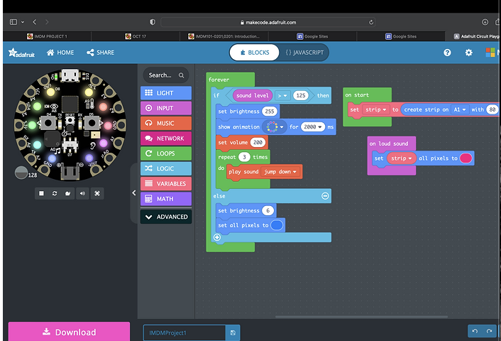

I developed a sound-reactive LED installation for a commonly used stairwell, integrating hardware and creative coding to create an immersive experience. The circuit board was strategically placed on a baseboard near the door to accurately detect the sound of the door closing. Upon detection, the LEDs, carefully positioned along the floor panels to simulate upward movement, transitioned into a light purple hue while a short audio clip played. The installation's functionality was precisely calibrated to the specific acoustics of the site, ensuring the correct response to environmental triggers. This project demonstrated my ability to create site-specific, interactive installations that combine technical precision with artistic expression.
